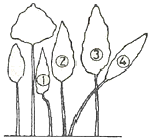
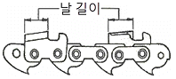
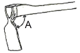
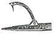
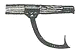
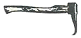
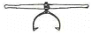

산림기능사 (2009-03-29 기출문제)
1과목: 조림 및 육림기술
1. 일반적인 침엽수종에 대한 묘포의 적당한 토양 산도는?
- pH 3.0~4.0
- pH 4.0~5.0
- pH 5.0~6.5
- pH 6.5~7.5
(정답률: 94%)

2. 다음 종자 중 발아율이 가장 낮은 것은?
- 주목
- 비자나무
- 해송
- 전나무
(정답률: 60%)
3. 묘목 규격과 관련된 T/R율에 대한 설명으로 틀린 것은?
- 묘목의 지상부와 지하부의 중량비이다.
- T/R율의 값이 클수록 좋은 묘목이다.
- 좋은 묘목은 지하부와 지상부가 균형 있게 발달해 있다.
- 질소질 비료를 과용하면 T/R율의 값이 커진다.
(정답률: 91%)
4. 조림지의 하목 식재용 수종의 구비조건이 아닌 것은?
- 내음성이 강한 수종일 것
- 가지가 적어 양지를 만들어 줄 수 있는 수종일 것
- 작은 나무라도 약간의 이용가치가 있는 수종일 것
- 뿌리혹박테리아에 의하여 토양에 질소분을 증가할 수 있는 수종일 것
(정답률: 62%)
5. 어미나무 작업(모수 작업)의 장점이 아닌 것은?
- 택벌작업에 비해 미관상 가장 아름다운 숲이 된다.
- 양수 수종의 갱신에 적합하다.
- 벌채작업이 한 지역에 집중되므로 작업이 간단하고 경제적이다.
- 남겨질 어미나무의 종류를 조절하여 수종의 구성을 변화시킬 수 있다.
(정답률: 64%)
6. 실생묘 표시법에서 1-1 묘란?
- 판갈이를 하지 않고 1년 경과된 종자에서 나온 묘목이다.
- 파종상에서 1년 보낸 다음 판갈이하여 다시 1년이 지난만 2년생 묘목으로서, 한 번 옮겨 심은 실생묘이다.
- 파종상에서만 1년 키운 1년생 묘목이다.
- 판갈이한 후 1년간 키운 1년생 묘목이다.
(정답률: 95%)
7. 1ha의 면적에 2m 간격으로 정방형으로 묘목을 식재하고자할 때 소요 묘목본수는 약 얼마인가?
- 2000 본
- 2500 본
- 4000 본
- 5000 본
(정답률: 76%)
8. 데라사키식 간벌에 있어서 간벌량이 가장 적은 간벌 방식은?
- A종 간벌
- B종 간벌
- C종 간벌
- D종 간벌
(정답률: 78%)
9. 가지치기는 언제 시행하는 것이 적절한가?(오류 신고가 접수된 문제입니다. 반드시 정답과 해설을 확인하시기 바랍니다.)
- 초봄부터 여름
- 늦봄부터 늦가을
- 초여름부터 늦가을
- 늦가을부터 초봄
(정답률: 55%)
10. 우리나라 지각의 대부분을 이루고 있는 암석은?
- 수성암
- 화성암
- 변성암
- 석회암
(정답률: 95%)
11. 이듬해 춘기까지 저장하기 어려운 수종으로 종자의 발아력이 상실되지 않도록 7월에 채종하면 즉시 파종해야 되는 수종은?(오류 신고가 접수된 문제입니다. 반드시 정답과 해설을 확인하시기 바랍니다.)
- 버드나무
- 벚나무
- 회양목
- 잣나무
(정답률: 75%)
12. 콩과식물의 비료목으로 가장 적당한 나무는?
- 삼나무
- 자귀나무
- 소나무
- 전나무
(정답률: 87%)
13. 이 작업은 대개 어린 나무가 자라서 갱신기에 이를 때까지 나무의 자람을 돕기 위해 6~8월 중에 실시하며, 9월 이후에는 조림목을 보호하는 기능이 있어 하지 않는 것이 좋은 작업은?
- 간벌
- 덩굴치기
- 풀베기
- 가지치기
(정답률: 75%)
14. 왜림작업의 장점에 대한 설명으로 틀린 것은?
- 경제성이 크다.
- 땔감 등 물질생산이나 소경목을 생산하고자 할 때 알맞은 방법이다.
- 작업이 간단하고 작업에 대한 확실성이 있다.
- 벌기가 짧기 때문에 농가에서도 쉽게 할 수 있다.
(정답률: 72%)
15. 간벌의 설명으로 틀린 것은?
- 임분 구성을 조절하기 위함이다.
- 나무를 솎아 냄으로써 남게 되는 나무에 더 넓은 공간을 주어 지름생산을 촉진하고 숲을 건전하게 한다.
- 벌기가 되기 전에 나무를 솎아베어 중간수입을 얻을 수도 있다.
- 밑나무를 조림하기 위함이다.
(정답률: 65%)
16. 땅속 50~100㎝ 깊이에 모래와 섞어 묻어 종자를 저장 하고, 종자의 후숙을 도와 발아를 촉진시키는 저장 방법은?
- 냉습적법
- 노천매장법
- 저온저장법
- 상온저장법
(정답률: 95%)
17. 참나무류, 호두나무, 밤나무 등의 대종립자의 파종에 흔히 쓰는 방법은?
- 조파
- 산파
- 취파
- 점파
(정답률: 91%)
18. 비교적 짧은 기간 동안에 몇 차례로 나누어 베어내고 마지막에 모든 나무를 벌채하여 숲을 조성하는 방식으로, 갱신된 숲은 동령림으로 취급되는 작업 방식은?
- 중림 작업
- 왜림 작업
- 개벌 작업
- 산벌 작업
(정답률: 72%)
19. 조림용 장려 수종은 장기수, 속성수, 유실수 등으로 구분 하였는데, 그 중 특성에 따라 오랜 기간 자라서 큰 목재를 생산하는 장기수로 적합한 것은?
- 잣나무
- 현사시나무
- 오동나무
- 밤나무
(정답률: 66%)
20. B종 간벌을 가장 옳게 설명한 것은?
- 4·5급목을 전부 벌채하고 2급목의 소수를 벌채하는 것
- 최하층의 4·5급목 전부와 3급목의 일부, 그리고 2급목의 상당수를 벌채하는 것
- 4·5급목의 전부와 3급목의 대부분을 벌채하고 때에 따라서는 1급목의 일부를 벌채하는 것
- 4·5급목의 전부와 특히 1급목의 일부도 벌채하는 것
(정답률: 65%)
21. 예비벌, 하종벌, 후벌에 의하여 갱신되는 작업법은?
- 택벌작업
- 개벌작업
- 산벌작업
- 모수작업
(정답률: 77%)
22. 나무를 심어 10년이 지나면 개체 간의 우열이 생긴다. 다음 그림의 수관급을 나타낸 숲의 단면도에서 3급목에 해당 하는 것은?

- ①
- ②
- ③
- ④
(정답률: 65%)
23. 수목의 종자번식과 비교한 무성번식의 특성에 관한 설명으로 틀린 것은?
- 종자 번식에 비해 기술이 필요하다.
- 좋은 형질의 어미나무를 확보하여야 한다.
- 접목묘는 개화 결실이 늦어진다.
- 실생묘에 비해 대량 생산이 어렵다.
(정답률: 70%)
24. 1년생 산출의 어린 묘로서 측근과 세근을 발달시켜 재이식 하였을 때 활착률을 높이기 위하여 주근을 단근(뿌리 끊기) 하는 것이 유리한 수종은?
- 느티나무
- 상수리나무
- 삼나무
- 낙엽송
(정답률: 47%)
25. 우리나라 조림수종의 경우 침엽수의 식재밀도는 일반적으로 ha당 몇 본 정도인가?
- 1000본
- 3000본
- 6000본
- 9000본
(정답률: 77%)
2과목: 산림보호
26. 지표에 쌓여 있는 낙엽, 지피물, 지상관목층, 갱신 치수 등이 불에 타는 화재는?
- 지중화
- 수간화
- 수관화
- 지표화
(정답률: 88%)
27. 묘포에서 뿌리나 지접근부를 주로 가해하는 곤충과는?
- 솜벌레과
- 굴파리과
- 비단벌레과
- 풍뎅이과
(정답률: 87%)
28. 묘포장에서 많이 발생하는 모잘록병 방제법으로 적당하지 않은 것은?
- 토양소독 및 종자소독을 한다.
- 돌려짓기를 한다.
- 질소질 비료를 많이 준다.
- 솎음질을 자주하여 생립본수를 조절한다.
(정답률: 85%)
29. 뿌리썩음병을 일으키는 병원균 중 담자균은?
- Rhizina undulata
- Phytophthora cactorum
- Armillaria mellea
- Rhizoctonia solani
(정답률: 49%)
30. 솔잎혹파리의 피해를 가장 심하게 받는 수종은?
- 소나무
- 분비나무
- 잣나무
- 리기다소나무
(정답률: 85%)
31. 살충제의 부작용에 대한 설명 중 틀린 것은?
- 천적류는 접촉제보다 소화중독제의 영향을 특히 많이 받는다.
- 살충제에 의한 영향은 새나 짐승과 같은 온혈동물 보다는 물고기, 개구리, 뱀 등의 냉혈동물들이 더 크게 받는다.
- 같은 살충제를 오랫동안 사용하면 저항성 해충군이 출현 된다.
- 진딧물류나 응애류의 경우 살충제를 사용한 후 해충밀도가 급격히 증가할 수도 있다.
(정답률: 53%)
32. 수목의 그을음병에 대한 설명으로 옳은 것은?
- 수목의 잎 또는 가지에 형성된 검은 색을 띠는 것은 무성하게 자란 세균이다.
- 병원균은 진딧물과 같은 곤충의 분비물에서 양분을 섭취한다.
- 이 병에 감염된 수목은 수목의 수세가 악화되면서 급격히 말라죽는다.
- 병원균은 기공으로 침입하며 침입균사는 원형질막을 파괴시킨다.
(정답률: 58%)
33. 바이러스병의 진단 방법으로 틀린 것은?
- 병징을 이용한 육안진단
- 지표식물을 이용한 생물검정
- 인공배양에 의한 배양적 진단
- 전자현미경을 이용한 진단
(정답률: 53%)
34. 산림 해충 방제법 중 생물적 방제법에 속하지 않는 것은?
- 병원 미생물의 이용
- 천적 곤충의 보호
- 식충 조류의 보호
- 혼효림 조성 이용
(정답률: 75%)
35. 병원균의 침입 방법 중 나무의 상처부위로 침입을 하는 대표적인 병균은?
- 밤나무 줄기마름병균
- 소나무 잎떨림병균
- 삼나무 붉은마름병균
- 향나무 녹병균
(정답률: 75%)
36. 농약의 효력을 높이기 위해 사용하는 물질 중 농약에 섞어서 고착성, 확전성, 현수성을 높이기 위해 쓰이는 물질은?
- 훈증제
- 불임제
- 유인제
- 전착제
(정답률: 90%)
37. 1년에 2회 발생하며 포플러류 등의 활엽수 잎을 가해하여 많은 피해를 주는 해충은?
- 천막벌레나방
- 미국흰불나방
- 오리나무잎벌레
- 밤나무혹벌
(정답률: 71%)
38. 뛰어난 번식력으로 인하여 수목 피해를 가장 많이 끼치는 동물은?
- 산토끼, 들쥐
- 사슴, 노루
- 산까치, 박새
- 곰, 호랑이
(정답률: 96%)
39. 연해의 방제 방법 중 임업적 방제에 관한 설명으로 틀린 것은?
- 연해가 예상되는 곳은 숲을 교림으로 가꾼다.
- 갱신기에는 대면적 개벌을 피한다.
- 석회질 비료를 시비하여 토양관리에 힘쓴다.
- 폭 100m 정도로 여러 층의 방비림을 조성한다.
(정답률: 35%)
40. 충분히 자란 유충은 먹는 것을 중지하고 유충시기의 껍질을 벗고 번데기가 되는데, 이와 같은 현상을 무엇이라 하는가?
- 부화
- 용화
- 우화
- 난기
(정답률: 85%)
3과목: 임업기계일반
41. 그림에서 체인의 날 길이가 모두 같지 않으면 어떤 현상이 나타나는가?

- 톱이 심하게 튀거나 부하가 걸리며 안내판 작용이 어렵다.
- 절삭깊이가 깊게 되어 기계에 무리가 가지 않는다.
- 절삭이 잘되어 능률이 높아진다.
- 절삭이 엷게 되어 기계능률이 낮아진다.
(정답률: 73%)
42. 경운기의 벨트 조정은 벨트 가운데를 손가락으로 눌러서 몇 ㎝ 정도 처지는 상태가 적합한가?
- 0.5~1㎝
- 2~3㎝
- 7~10㎝
- 11~15㎝
(정답률: 75%)
43. 도끼자루용 원목으로 가장 적합한 수종은?
- 소나무
- 감나무
- 물푸레나무
- 이태리포플러
(정답률: 89%)
44. 삼각톱니 관리 시 목재와의 마찰을 부드럽게 하기 위하여 톱니 젖힘을 한다. 젖힘의 크기(폭)는 어느 정도가 가장 적당한가?
- 0.5~0.1㎜
- 0.2~0.5㎜
- 0.6~0.8㎜
- 0.9~0.11㎜
(정답률: 81%)
45. 2행정 내연기관에서 연료에 오일을 첨가시키는 이유로 가장 적합한 것은?
- 점화를 쉽게 하기 위하여
- 엔진 내부에 윤활작용을 시키기 위하여
- 엔진 회전을 저속으로 하기 위하여
- 체인의 마모를 줄이기 위하여
(정답률: 90%)
46. 체인톱날 연마 시 깊이제한부를 너무 낮게 연마했을 때 나타나는 현상으로 틀린 것은?
- 톱밥이 정상으로 나오며 절단이 잘 된다.
- 톱밥이 두꺼우며 톱날에 심한 부하가 걸린다.
- 안내판과 톱니발의 마모가 심해 수명이 단축된다.
- 체인이 절단되면서 사고가 날 수 있다.
(정답률: 67%)
47. 체인톱 엔진 회전수를 지정할 수 있는 장치는?
- 스로틀레버
- 스프라켓
- 에어휠터
- 스파크플러그
(정답률: 77%)
48. 경사지나 평지 등 모든 곳에 사용하는 일반적인 사식재 괭이날의 자루에 대한 적정한 각도(A) 범위는?

- 60~70°
- 75~80°
- 9~12°
- 85~90°
(정답률: 64%)
49. 벌목작업에 사용하는 무거운 벌목용 도끼의 날 각도로 가장 적합한 것은?
- 2~4°
- 5~7°
- 9~12°
- 15~20°
(정답률: 79%)
50. 체인톱에 사용되는 오일에 관한 설명으로 옳은 것은?
- 묽은 윤활유를 사용하면 톱날의 수명이 길어진다.
- 윤활유가 가이드 바 홈 속에 들어가지 않게 한다.
- 윤활유 점액도를 표시하는 SAE는 미국윤활유협회 약자이다.
- 윤활유 점액도를 표시하는 SAE 10W-40에서 수치가 높을수록 점도가 높다.
(정답률: 69%)
51. 4행정 엔진과 비교한 2행정 엔진의 설명으로 올바른 것은?
- 저속 운전이 용이하다.
- 점화가 어렵다.
- 무게가 무겁다.
- 휘발유와 오일 소비가 적다.
(정답률: 57%)
52. 트랙터 부착형 집재기인 파미윈치에 대한 설명으로 올바른 것은?
- 작업로에 진입하여 작업할 수 없다.
- 견인작업 시 와이어로프 외각은 위험한 지역이다.
- 트랙터의 동력을 이용한 지면끌기씩 집재 기계이다.
- 일반적으로 견인거리가 100~200m이다.
(정답률: 70%)
53. 기계톱에 사용하는 연료는 휘발유 20리터에 오일을 얼마나 혼합해야 하는가?
- 1.2리터
- 0.6리터
- 0.8리터
- 1.0리터
(정답률: 88%)
54. 그림 중 샤피에 해당하는 것은?




(정답률: 82%)
55. 체인톱 몸체와 체인작동부 사이에 있는 손톱의 날처럼 생긴 스파이크를 절단작업 시 나무에 박고 작업할 때는 어떤 효과가 있는가?
- 절단이 빨리 된다.
- 진동이 적고 쉽게 작업할 수 있다.
- 체인이 끊어졌을 때 잡아주는 역할을 한다.
- 체인 마모를 감소시켜 준다.
(정답률: 87%)
56. 1PS는 약 몇 kW인가?
- 0.375
- 0.700
- 0.735
- 0.750
(정답률: 71%)
57. 체인톱의 다이아프램식 연료펌프의 기능과 작동법 설명으로 올바른 것은?
- 피스톤이 상사점일 때는 연료실의압력이 높아진다.
- 피스톤이 상사점일 때는 펌프실의 압력이 높아진다.
- 피스톤이 하사점일 때는 연료실의 체적이 커진다.
- 피스톤이 하사점일 때는 크랭크실의 압력이 높아진다.
(정답률: 46%)
58. 기계톱 사용 시 안전사항으로 틀린 것은?
- 이동시에는 엔진을 반드시 정지시킨다.
- 안내판 코로 작업하는 것은 매우 위험하므로 주의하여야 한다.
- 톱 운반 시 반드시 안내판을 보호집에 넣어야 한다.
- 평지와 경사지를 오를 때에는 안내판이 앞쪽으로 향하도록 한다.
(정답률: 73%)
59. 침·활엽수 유령림의 무육작업에 시용하고, 직경 5㎝ 내외의 잡목 및 불량목을 제거하기에 가장 적합한 도구는?
- 예취기
- 스위스 보육낫
- 소형 전정가위
- 소형손톱
(정답률: 58%)
60. 2행정 기관은 크랭크축이 1회전 할 때마다 몇 회 폭발하는가?
- 1회
- 2회
- 3회
- 4회
(정답률: 84%)